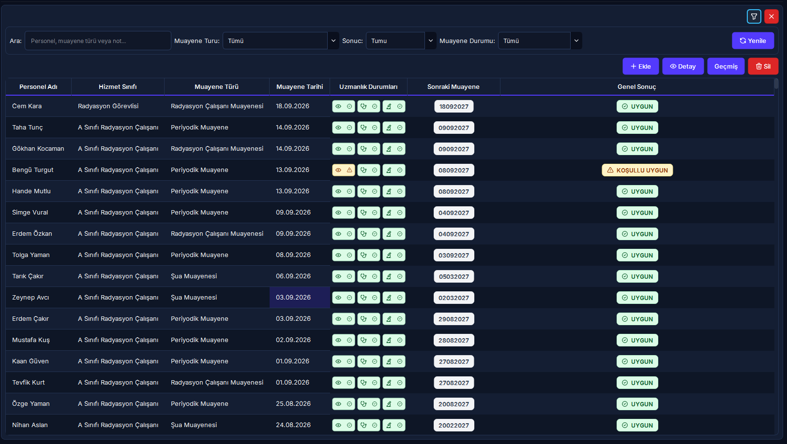

13. Sağlık Muayeneleri ve Periyodik Takip
Radyasyonla çalışan personelin işe giriş ve periyodik sağlık gözetim süreçlerini, iki aşamalı klinik iş akışını (Ön Hazırlık & Sevk ile Hekim Kararı & Arşivleme), Sağlık Bakanlığı ve NDK standartlarındaki resmi iki sayfalık EK-1 A4 PDF sevk formunu, üç temel uzmanlık branşının (Göz, Dahiliye, Dermatoloji) klinik değerlendirmelerini, otomatik randevu takvimini ve revizyon denetim izini yöneten modüldür.
Vizyonder Hızlı Karar Reçetesi (Klinik Takip & İSG Özeti)
[Yeni Sevk Başlat] butonuyla personel seçimi, maruziyet, anamnez soruları ve 12 belirti/bulgu girilerek sevk kaydı oluşturulur; resmi 2 sayfalık A4 EK-1 formu otomatik üretilir.
Çıktısı alınan EK-1 formu ile polikliniklere (Göz, Dahiliye, Cildiye ve Tam Kan Sayımı) sevk yapılır; uzman hekimler Sayfa 2'deki boş kutuları el yazısıyla doldurup kaşeler.
[Hekim Kararı] butonuyla poliklinik sonuçları ve nihai hekim kararı işlenir; ıslak imzalı taranmış rapor şifreli kasaya yüklenir. 30 gün kala sarı uyarı verilir.
Arayüz Bileşenleri ve 5N1K Tablosu
Sağlık Muayeneleri modülündeki ekran kontrolleri, butonlar ve branş imza alanlarının işlevsel kullanım kılavuzu:
Muayene Takip Listesi ve Görsel Durum İkonları
Personellerin periyodik muayene durumu, branş ikonları (Göz, Dahiliye, Dermatoloji) ve genel uygunluk kararlarının merkezi kokpiti:

Radyasyonla Çalışmaya Uygun
Tüm branş kontrollerinde engel durum tespit edilmemiş, personelin radyasyonlu ortamda çalışmasında sakınca bulunmayan rutin kayıtlar.
Şartlı & Yakın Takip
Hekim tarafından koruyucu ekipman şartı veya daha sık aralıklarla ara kontrol tavsiyesi konulmuş çalışanları simgeler.
Periyodu Geçmiş Muayene
Bir sonraki kontrol tarihi üzerinden zaman geçmiş çalışanlar; sistem kırmızı uyarı verir ve gecikme raporunda listeler.
İki Aşamalı Klinik Muayene Süreci ve Resmi EK-1 A4 PDF Çıktısı
Sağlık muayene formu klinik iş akışına uygun olarak iki bağımsız aşamaya ayrılmıştır: 1. Ön Hazırlık & Sevk aşamasında anamnez ve belirtiler sorgulanıp resmi EK-1 formu üretilir; 2. Hekim Kararı & Arşivleme aşamasında ise poliklinik bulguları işlenir ve ıslak imzalı tutanak KVKK şifreli kasasına arşivlenir.
Ön Hazırlık, Anamnez ve Resmi EK-1 Sevk Formu
- • Personel Seçimi & Maruziyet: Personel seçildiğinde TC kimlik, departman ve unvan otomatik gelir; haftalık çalışma saati ve geçmiş radyasyon çalışma süresi doğrulanır.
- • Anamnez ve 12 Belirti Matrisi: Mevzuatta yer alan 12 klinik belirti/bulgu sorgulanır. Sevk kaydı oluşturulduğunda sistem otomatik olarak Resmi EK-1 A4 PDF belgesini üretir ve açar.
- • Resmi EK-1 A4 PDF Çıktısı (docs/21.5.7077): Sağlık Bakanlığı ve NDK standardında 2 sayfalık resmi sevk ve muayene belgesi üretilir.
- • Dürüst Boş Durum (Sıfır Sentetik Veri Kuralı): Sayfa 1'de çalışan künyesi ve beyanı basılırken; Sayfa 2'deki poliklinik muayene tabloları (El-Cilt, Malignite, Tam Kan Sayımı ve Katarakt) hekimin elle muayene yapıp doldurabilmesi için tamamen temiz ve boş bırakılır.
- • Resmi Matbu Tipografi (Times New Roman): Şablon fontu resmi sağlık kurulu evrakı standardı olan Times New Roman ile hazırlanmış olup 4 sütunlu tam genişlikli kan sayımı matrisi sunar. Belge adı `EK1_Saglik_Muayene_{Ad_Soyad}_{TC}_{Tarih}.pdf` olarak standartlaşır.
- • Otomatik Bildirim Çekmecesi & Hızlı Sevk Kartı: Personel "Sevk Edildi / Muayenede" durumuna alındığı anda masaüstü bildirim çekmecesine ve personelin web paneline anlık bildirim kartı iletilir. Bildirime tek tıkla tıklandığında personelin sağlık kartı doğrudan açılarak EK-1 formunun basılması ve poliklinik randevu hazırlığı garanti altına alınır.
Poliklinik Muayeneleri, Hekim Kararı ve KVKK Kasası
- • Poliklinik Sonuçlarının İşlenmesi: Dahiliye (Tam Kan Sayımı, tiroid), Dermatoloji (cilt/lezyon) ve Göz (lens/katarakt) polikliniklerinden dönen kaşeli sonuçlar ve imzalar sisteme işlenir.
- • Nihai Hekim Kararı: İşyeri hekimi tarafından personelin radyasyon alanında çalışmasına dair genel kanaat (Uygun, Koşullu Uygun, Uygun Değil) belirlenir.
- • KVKK Şifreli Evrak Kasası: Poliklinik hekimlerince kaşelenip imzalanan ıslak imzalı resmi EK-1 raporu taranarak sisteme yüklenir; AES-256 Fernet ile şifrelenerek güvenli evrak kasasında saklanır.
- • Ferah ve Dengeli Liste Tablosu: Personel Adı, Birim ve Ünvan sütunları ekran genişliğini dengeli paylaşır; tarihler ve kararlar net genişliklerle kesilmeden ferah biçimde izlenir.
Hekimin tıbbi kanaati, koruyucu donanım şerhleri veya ara kontrol tavsiyeleri `Tavsiyeler` metin kutusuna girilir ve detayda saklanır.
İleri Tetkik Sevk Süreci ve Resmi Heyet Raporu Kısıtı
Rutin periyodik kontrolde şüpheli bulgu saptandığında izlenen kurumsal sevk ve çalışma kısıtı protokolü:
Şüpheli Bulgu & İleri Tetkik Sevki
Periyodik muayenede branş hekimi tarafından *"Uygun Değil"* veya *"Koşullu Uygun"* kanaati belirtildiğinde, personel ilgili kliniğe ayrıntılı ileri tetkikler için sevk edilir.
Resmi Sağlık Kurulu (Heyet) Kararı
İleri tetkiklerin ardından Sağlık Kurulu toplanır. Personelin radyasyon ortamında çalışıp çalışamayacağı resmi Heyet Raporu tutanağına bağlanır.
Nöbet Muafiyeti & Çalışma Kısıtı
Heyet raporunda radyasyonsuz alanda çalışma kararı çıkarsa, Yönetici/RKS tarafından Modül 07 üzerinden resmi çalışma kısıtı açılır ve nöbet motoru personeli korumaya alır.
Hibrit Arayüz ve Web Portalı Görünümü
Masaüstü klinik kayıt ve evrak yönetim merkezi ile web portalı sağlık göstergeleri karşılaştırması:
Masaüstü Yönetim İstemcisi (PySide6)
- ✓ Yeni muayene kaydı açma, branş sonuçları ve hekim imzalarını teyit etme.
- ✓ Taranmış sağlık heyet raporlarını AES-256 şifreli kasaya aktarma.
- ✓ Sağ tık ile personelin tüm kronolojik muayene geçmişini inceleme.
- ✓ Bildirim çekmecesinden tek tıkla sevk edilen personelin sağlık kartına doğrudan erişim.
- ✓ Değişiklik ve silme işlemlerinde revizyon günlüğü ve evrensel onay kuyruğu.
Web & Mobil Portalı (SaglikDashboard)
- ✓ Sağlık Uyum Oranı (%): Kurum genelindeki personellerin muayene güncelliği.
- ✓ Branş Dağılım Çizelgesi: Göz, Dahiliye ve Dermatoloji uygunluk oranları grafiği.
- ✓ Muayene Yığılma Tahmini: 12 aylık periyotta beklenen kontrol randevu yoğunluğu.
- ✓ Kişisel Sağlık Karnesi: Personelin bir sonraki kontrolüne kalan gün sayısını görmesi.
- ✓ Sevk ve Muayene Bildirimleri: Muayeneye sevk edilen personele poliklinik hazırlık kartı ve EK-1 bilgilendirme uyarısı.
Sağlık Muayeneleri Karar Destek Akış Şeması
Periyodik kontrol planlamasından branş değerlendirmesi ve resmi heyet kısıtına kadar olan karar döngüsü:
Sağlık Takibi & Mit Avcısı (Kritik Kurallar)
"Klinik muayenede hekim 'Uygun Değil' seçtiği anda sistem personelin tüm nöbetlerini otomatik iptal eder ve çalışmasını kilitler."
Rutin poliklinik muayenesi doğrudan çalışma engeli koymaz. Personel ileri tetkike sevk edilir; çalışamayacağı resmi Sağlık Kurulu (Heyet) Raporu ile kesinleşirse bu durum Modül 07'ye kısıt olarak işlenir.
"Sağlık muayene formunu kaydedebilmek için 3 branşın da (Göz, Dahiliye, Cilt) aynı gün tamamlanmış olması şarttır."
Hayır. En az bir branş sonucu (örneğin sadece Dahiliye kan tahlili) girilerek form kısmi/taslak kaydedilebilir; diğer uzmanlık muayeneleri tamamlandıkça form açılarak güncellenir.
"Sonraki muayene tarihi sistem tarafından 12 ay sonraya atandığı için hekim ara kontrol istese de tarih değiştirilemez."
Sistem seçilen türe göre (6 veya 12 ay) varsayılan tarihi önerir; ancak hekimin klinik önerisi doğrultusunda Sonraki Muayene Tarihi alanına manuel olarak daha erken bir kontrol tarihi girilebilir.
Sıkça Sorulan Sorular (SSS)
Soru 1: Bir muayene kaydında "Uygun Değil" seçildiğinde personel hemen nöbetlerden düşürülür mü?
Bu muayene ekranı rutin klinik takip ekranıdır. "Uygun Değil" görüşü verildiğinde personel ilgili branş kliniğine ileri tetkik için yönlendirilir. Eğer ileri tetkiklerin ardından resmi Sağlık Kurulu (Heyet) Raporu ile çalışamayacağı kesinleşirse, bu durum Modül 07 (Nöbet Ayarları ve Kısıtlar) ekranından heyet raporu şerhiyle resmi kısıt olarak işlenir ve nöbet muafiyeti başlar.
Soru 2: Muayenede üç branş hekiminden sadece biri sonuç verdiğinde formu kaydedebilir miyim?
Evet. Formda en az bir branş sonucunun (örneğin yalnızca Dahiliye hemogramı) seçilmiş olması kaydetmek için yeterlidir. Diğer branş muayeneleri tamamlandıkça form [Detay] butonundan açılarak güncellenebilir.
Soru 3: Sonraki muayene tarihi otomatik geliyor fakat hekim 3 ay sonra ara kontrol önerdi. Tarihi değiştirebilir miyim?
Evet. Sistem seçilen türe göre (6 ay veya 12 ay) varsayılan sonraki tarihi otomatik hesaplar; ancak hekim tavsiyesi doğrultusunda Sonraki Muayene Tarihi alanına manuel olarak daha erken bir tarih yazılabilir.
Soru 4: Geçmişte silinmiş veya değiştirilmiş bir sağlık muayenesini denetim esnasında nasıl kanıtlayabilirim?
Tablo satırına sağ tıklayıp Değişiklik Geçmişi seçeneğini açtığınızda; sistem kaydın eski JSON verisini, değiştiren/silen kullanıcının adını ve kesin işlem zaman damgasını resmi denetim izi tablosunda sunar.